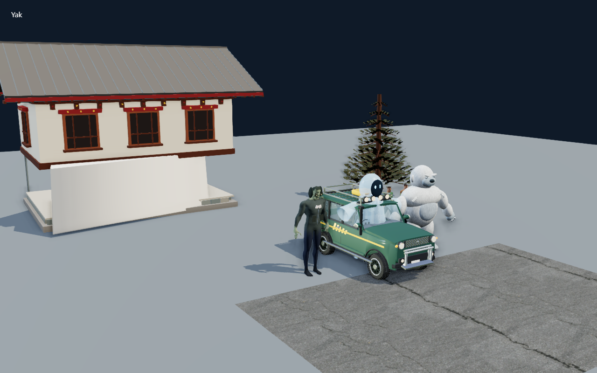
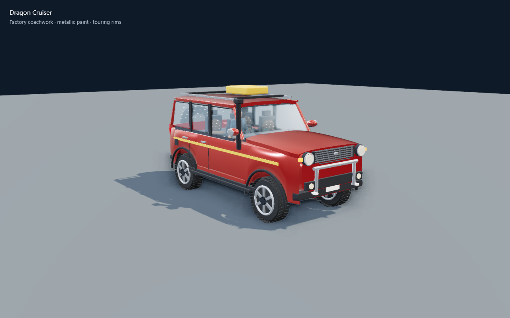
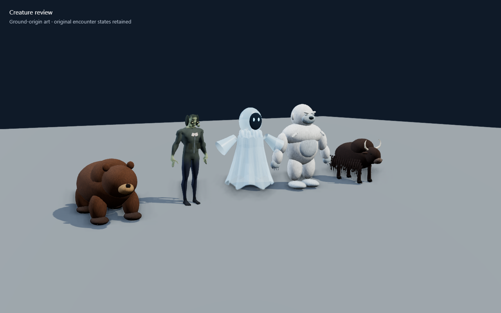

Web / PWA
Play now. Install from your browser’s app menu for a dedicated window. The game shell and previously used assets work offline; music streams while online.
Play onlineNovarah Interactives · Public beta
Get your guests over the pass. Brave the storm. Make it home with a story.
Play onlineFree to play in your browser. Keyboard, gamepad and touch controls.

Learn the ropes at the Driver’s Academy, then take on ten campaign routes: city pickups, airport runs, snowy climbs and the long journey to Gelephu.
Four vehicles. Saved upgrades and garage cosmetics. Remastered coachwork, scenery, lighting and creatures. The beta keeps your existing local progress.


Take the road with you
Version 0.4.0-beta.1
Play now. Install from your browser’s app menu for a dedicated window. The game shell and previously used assets work offline; music streams while online.
Play onlineInstallers are being prepared. Downloads appear here when available.
The ARM64 release is being prepared. A download appears here when available.
This beta combines the complete campaign with the graphical remaster, road-surface camera shake, driver’s-eye and chase views, and a reversing camera window.
Release notes and checksumsWindows: choose EXE or MSI, run the installer, then launch Crazy Bhutan Hill Race. Installers may need internet to install Microsoft WebView2. An unsigned beta may show Windows SmartScreen; verify the source and checksum before proceeding. Android: download the APK, allow installation from your chosen browser when Android asks, then open it. Keep Play Protect enabled. Browser, Windows and Android local saves are separate; optional cloud accounts can transfer compatible progress.
Local progress and settings stay on your device. Optional Firebase features use a guest or account identity for private cloud saves, player-submitted leaderboard times and feedback. Statistics are opt-in. Account email is managed by Firebase Authentication. Feedback is sent only when you submit it; avoid personal information in messages. Cloud services need internet. You can play locally without signing in.
Created by Novarah Interactives, a subdivision of Novarah Technologies. Branding and original game art belong to their owners. The human base is by Quaternius; surface maps, forest atlas and outdoor HDR are by Poly Haven contributors under CC0. Three.js and other software retain their respective licenses. Read the asset and software notices.
Use W/S or arrows to accelerate and brake, A/D to steer, C to switch camera, and Escape to pause. Touch controls appear on phones. For bugs and suggestions, open Feedback from the game menu, Settings or About. Include the route, vehicle and what happened.
Open the game and send feedbackBeta software: please expect rough edges. Browser emulation does not establish native-device performance.